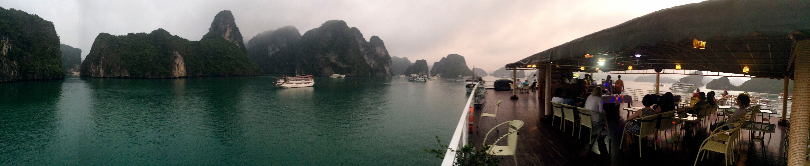
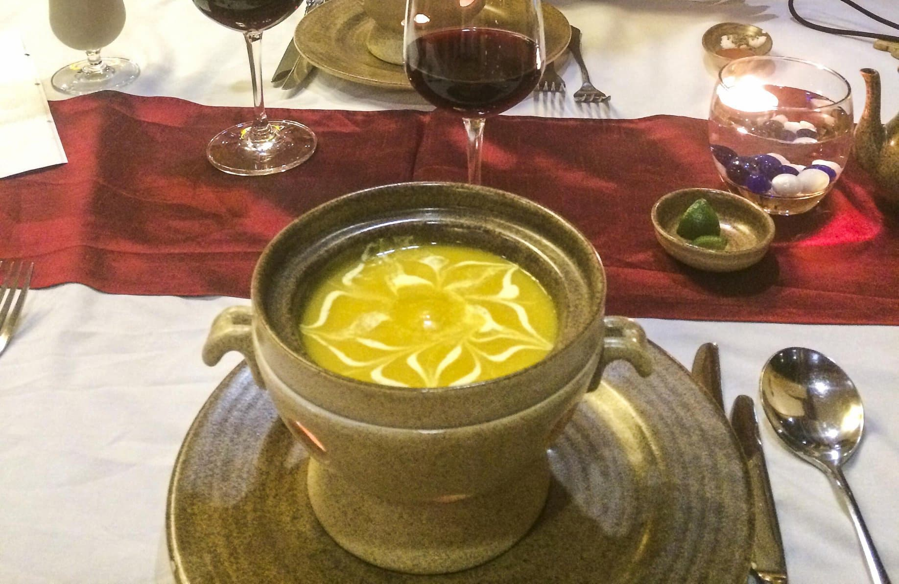

Халонг — бухта во Вьетнаме, находится в Тонкинском заливе Южно-китайского моря. Халонг переводится как «там, где дракон спустился в море». Бухта включает в себя более 3000 островов, а также небольшие скалы, утёсы и пещеры, площадью около 1553 км². Была местом нескольких военных сражений против прибрежных соседей Вьетнама. В конце XVIII века бухта служила убежищем для пиратов, которых китайские и вьетнамские власти не могли уничтожить. Внесена в список объектов всемирного наследия ЮНЕСКО в 1994 году, вошла в десятку лучших достопримечательностей наследия ЮНЕСКО в Азии, — в соответствии с данными туристического сайта британской компании Rough Guides, также Халонг получил звание одного из "7 новых чудес света" в 2011 году.
Посмотреть на картеКлимат
Климат — тропический, влажный, с двумя сезонами: жаркое влажное лето и сухая холодная зима. Средняя температура — от 15 до 25 °C. В год выпадает примерно 2000—2200 мм осадков. Я был там в апреле, температура около 20-23°C, дождей практически не было. Самыми благоприятными туристическими периодами являются апрель-май и сентябрь-октябрь.
Транспорт
Вы можете самостоятельно добраться до Халонга на рейсовом междугородном автобусе. Такие автобусы отправляются с автобусных станций в Ханое Long Bien, Gia Lam Station, My Dinh или Luong Yen. Расстояние по дорогам примерно 175 км от столицы Ханоя. Среднее время в пути с многочисленными остановками составит около 5 часов. Но самостоятельная поездка в Халонг имеет смысл, только если вы хотите пробыть в Халонге несколько дней.
Мой двухдневный тур включал в себя трансфер из отеля в Ханое. Время в пути на автобусе около 4 часов, с остановкой на шелковой фабрике, где вручную делают потрясающие картины из шелковой нити.
Вид на город Халонг со стороны бухты
Стоимость
Насколько мне известно, стоимость 2-дневного тура с одной ночью на судне начинается от $85. Мой тур обошелся дороже, за два дня и одну ночь на корабле в 2014 году я отдал $125 (для любителей пошиковать есть и подороже). В стоимость включен трансфер от дверей отеля в старом Ханое, англоговорящий экскурсовод и прекрасный сервис.
Посмотреть текущие цены можно на booking.com, компания называется Huong Hai Cruise Sealife
Узнать ценынаше судно
Программа тура
С учетом проезда из Ханоя и обратно, в самой бухте вы проведете ровно одни сутки. Вы увидите остров головы человека, остров черепах и множество других островков, посетите громадную пещеру Sung Sot, сможете поплавать на кайаке, остановитесь на Острове космонавта Титова с пляжем и смотровой площадкой на самом верху.
Каюта
Каюты очень комфортные, есть кондиционер, мини-бар и ванная комната с душевой кабиной. Гостям также предоставляются банные халаты и тапочки. Есть персональный балкон со столом и двумя стульями. Я не знаю зачем там телевизор при таких шикарных и постоянно-меняющихся видах из окна, но телевизор с плоским экраном и бесплатными фильмами в каюте тоже есть.
Острова
Пещера Sung Sot
Огромная пещера Sung Sot, расположенная на острове Бо Хон - одно из самых удивительных мест Халонга. Она была впервые обнаружена французами в 1901 году, которые взяли на себя смелость назвать ее «Grotte des Surfers» или «Пещера сюрпризов». Пещера приветствовала своих первых посетителей в 1993 году, всего за год до того, как залив Халонг получит от ЮНЕСКО свой первый статус объекта всемирного наследия. Пещера занимает ошеломляющие 10 000 квадратных метров (это вдвое больше, чем Белый дом, если уж на то пошло). Пещера имеет высоту около 30 метров и имеет проход длиной 500 метров. Мне не удалось побывать в самой большой пещере Hang Sơn Đoòng, но даже масштабы этой трудно передать фотографией:
На сегодняшний день в официальный реестр внесено 59 пещер.
еще одна пещера
Остров Титова
Советский космонавт Герман Титов (самый молодой космонавт в истории) впервые побывал во Вьетнаме зимой 1962 года. С тех пор по распоряжению Хо Ши Мина остров 46 носит его имя. Здесь неплохой пляж, есть причал, бар и смотровая площадка на вершине скалы, с которой открывается красивая панорама залива.
Пещера Луон
Эту красивую пещеру можно найти на острове Бо Хон, который расположен примерно в 14 километрах к югу от пляжа Бай Чай. Напротив пещеры находится островок Кон Руа, а справа от острова - Небесные ворота. Длина пещеры составляет около 60 метров, а в зависимости от прилива она может достигать 4 и 2,5 метров в высоту. Пройдя через пещеру, вы попадете к небольшому озеру, окруженному горами.
Вечером на борту пройдет кулинарная демонстрация, где вы попробуете приготовить одно из вьетнамских блюд под руководством шеф-повара.
Кроме того, вас ждет прекрасный ужин. В ресторане на борту судна за завтраком, вторым завтраком, обедом и ужином подают вкусные блюда вьетнамской кухни и лучшие блюда интернациональной кухни. В баре можно заказать коктейли, домашнее вино и крепкие спиртные напитки.
